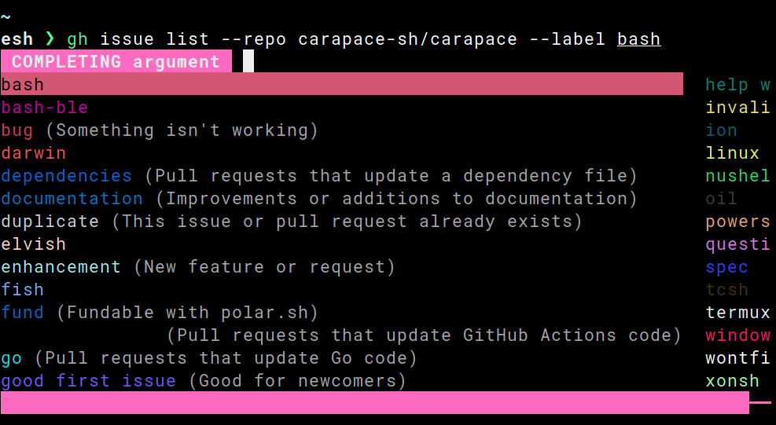

Light
Rust
Coal
Navy
Ayu
carapace
Carapace
A multi-shell completion
library
and
binary
.

Read
,
Install
and
Setup
.
Vibrant
Highlight in different
Styles
.
Group by
Tags
.
Give feedback with
Messages
.
Fast
Export
in milliseconds.
Cache
slow completions.
Invoke concurrent
Batch
.
Complex
Add
Plugins
and change
Workdir
.
Embed
continuously.
Complete as
MultiParts
.
Versatile
Write custom
Specs
.
Leverage existing
Macros
.
Bridge
other frameworks.